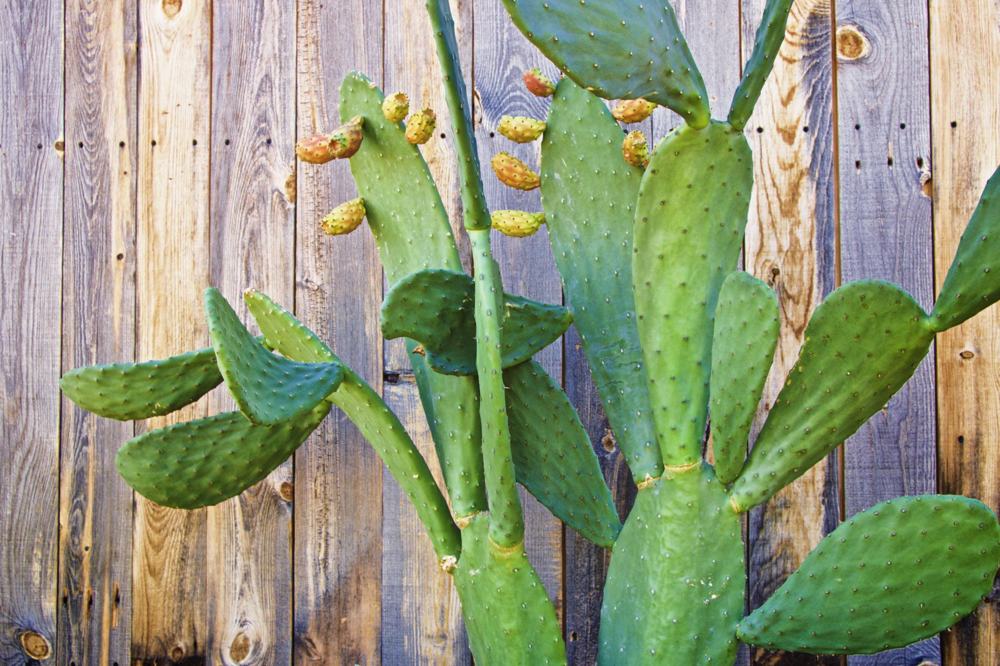

Modifica esto a tu antojo con los archivos Jade y en cuanto estés listo corre el siguiente comando para compilar todo:
gulpUna vez que quieras poner todo en modo producción (minimizado y comprimido) corre el siguiente comando:
gulp productionSi estás ocupando Github Pages y quieres subir el proyecto ahí simplemente puedes correr.
gulp deploy Finalmente recibe un nopal sin ningún motivo aparente 🐶.
